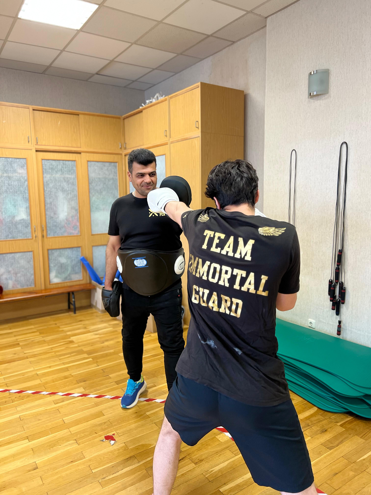
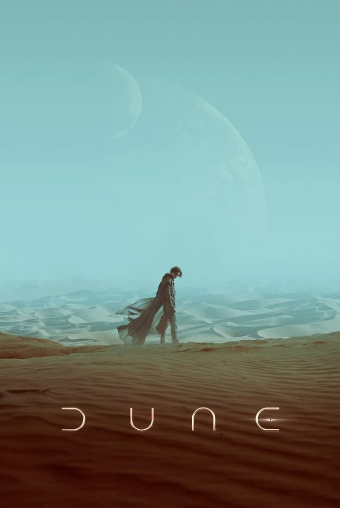
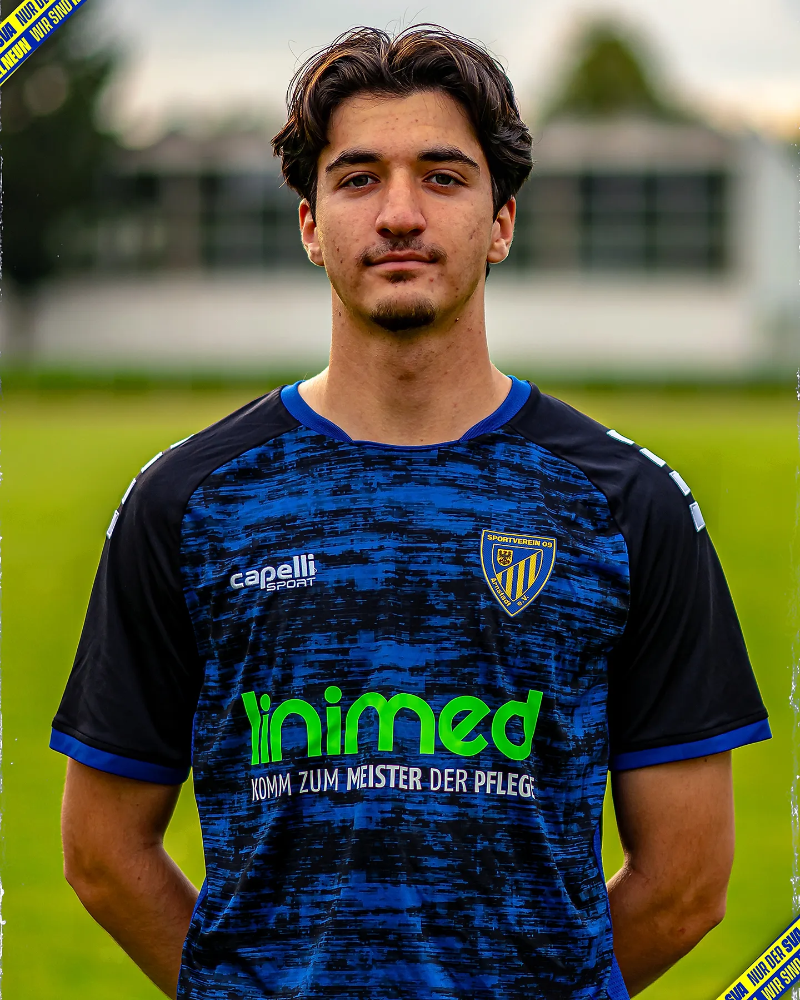
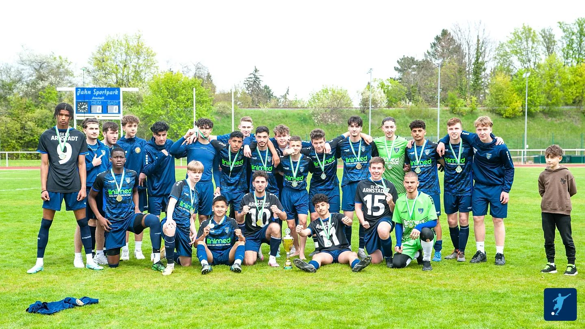

My Passions and Hobbies
Outside of my studies, I live a life full of movement, curiosity, and creativity. Kickboxing is a big part of who I am — it pushes my limits, keeps me disciplined, and sharpens my mind as much as my body. Alongside that, I train in strength sports, always challenging myself to become stronger and more resilient.
I’ve always been drawn to stories — not just modern ones, but old tales that carry history, wisdom, and culture. I enjoy spending time in nature, finding peace and clarity away from screens and noise. Science fiction films and series fascinate me because they mix imagination with the possibilities of science — a combination that inspires my own thinking.
Physics is another passion of mine. Even though I chose computer science as my field of study, I continue to explore physics with genuine interest. Sports have been part of my life since childhood — I played football for eight years, winning the Thuringia Championship, an achievement that taught me teamwork, perseverance, and dedication.
For me, hobbies are more than free-time activities. They’re part of my personal growth, shaping the way I think, act, and face challenges.
